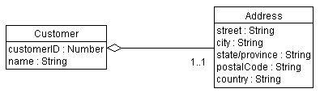
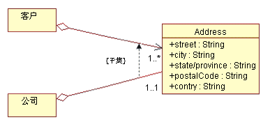
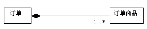
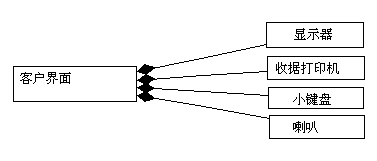
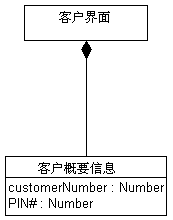
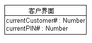
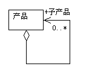

| 指南：聚集 |
 |
|
聚集聚集用于对模型元素之间的组成关系建模。组成关系有许多示例：图书馆有若干书籍，公司内的部门由若干员工组成，计算机由若干设备构成。要对此进行建模，聚集（部门）与其组成部分（ 员工）之间存在聚集关联。 在聚集（整体）这一边，向关联路径的末端附加了一个空心菱形，用于指示聚集。 示例 在该示例中，客户有地址。由于两个类代表某个较大整体的一部分，所以我们使用聚集。我们还选择了将地址作为单独的类来建模，因为许多其他种类的事物也有地址。  一个聚集对象可将其他对象结合在一起。 共享的聚集比聚集所确定的关系的多重性更强的聚集关系称为共享的关系，并且破坏聚集不一定会破坏这些组成部分。由隐含意义可知，共享的聚集形成图或有许多根的树。在两个类之间存在强大的关系的情况下使用共享的聚集，因此同一实例可参与到两个不同的聚集中。 示例 考虑拥有家庭企业的人员的例子。“人”和“企业”都有一个“地址”，事实上这是相同的地址。“地址”是“人”和“企业”的不可缺少的部分。然而，“企业”可能不再存在，但“人”很可能还住在同一地址。 还要注意：在这种情况下，可能由共享的聚集开始，然后在稍后的某个日期转化为非共享的聚集。家庭企业可能壮大兴旺，最终迁到不同的地址。此时，“人”和“企业”就不再享有相同的地址了。结果，将不再共享聚集。  共享的聚集的示例。 组合组合是具有强大所有权、且部件的生存期与聚集一致的一种聚集形式。聚集端的多重性（在示例中为订单）不得大于 1（即：它不能被共享）。并且，该聚集是无法改变的，即：一旦确定了聚集，就不能改变其链接。由隐含意义可知，组合聚集将形成由各部件组成的“树”，其中“根”是聚集，各部件是“分枝”。 在聚集和部件之间存在强大的相互依赖关系，若没有部件，聚集定义就不完整的情况下，应使用组合聚集，而不是“普通”聚集。在下例中，在未订货（即订单商品）的情况下，订单没有意义。在某些情况下，早在分析时就可确定该相互依赖关系（就像该示例的情况），但是更常见的是直到设计时才能自信地做出这样的决策。 如下所示，关联路径的末端附加了一个用于指示组装的实心菱形：  组合聚集的示例 示例 在该示例中，客户接口由若干个其他类组成。在该示例中尚未指定聚集的多重性。  客户接口对象知道属于它的显示器、收据打印机、小键盘和扬声器对象。 使用组装对类属性建模类的属性是类知道的某事物。在以上显示的客户类的示例中，可选择将客户地址作为类（我们已经知道该地址）或作为类的一组属性建模。是使用类和聚集关系，还是使用一组属性，这取决于以下因素：
示例 在自动柜员机中，系统必须跟踪当前的客户及其 PIN，我们假设客户接口负责这项工作。可将该信息视为类“属性”。可如下所示，使用单独的类来完成：  使用聚集建模的对象属性 另一方法是使用属性来使客户接口跟踪当前客户及其 PIN，对该方法建模的方式如下：  使用属性建模的对象特征 对于单独的类，是使用属性还是使用聚集关联，这取决于所代表的概念之间的耦合程度：当被建模的概念联系紧密时，则使用属性。当概念可能独立地发生变化时，则使用聚集。 使用聚集还是关联？仅当类之间存在组合关系时才使用聚集，其中一个类是由其他类组成的，且“部件”在整体环境之外是不完整的。 考虑订单的示例：内容“为空”而不含“任何事物”的订单是毫无意义的。对所有聚集也都如此：“部门”必须含有“员工”，“家庭”必须含有“家庭成员”等。 若类可以在由其他类提供的环境之外具有独立的身份，若这些类不是某个更大整体的部件，那么应使用关联关系。此外，在不确定的时候，使用关联更为适合；聚集通常很明显，并且是为了帮助澄清才选择聚集。这并这不是建模工作成功的关键所在。 自我聚集有时，类可以与它自身聚集。这并不意味着该类的实例由其自身组成（这将是很愚蠢的），而是指该类的一个实例是由同类的其他实例组成的聚集。在自我聚集的情况下，角色名称对区分关联的目的尤为重要。 示例 考虑以下关于类产品的自我聚集：  在该示例中，产品可由其他产品组成；如果是这样，被聚集的产品称为子产品。只有从聚集到子产品的关联是可导航的；也就是说，子产品不知道它们是哪些产品的一部分（因为它们可能是许多产品的一部分）。 |
© Copyright IBM Corp. 1987, 2006. All Rights Reserved. |